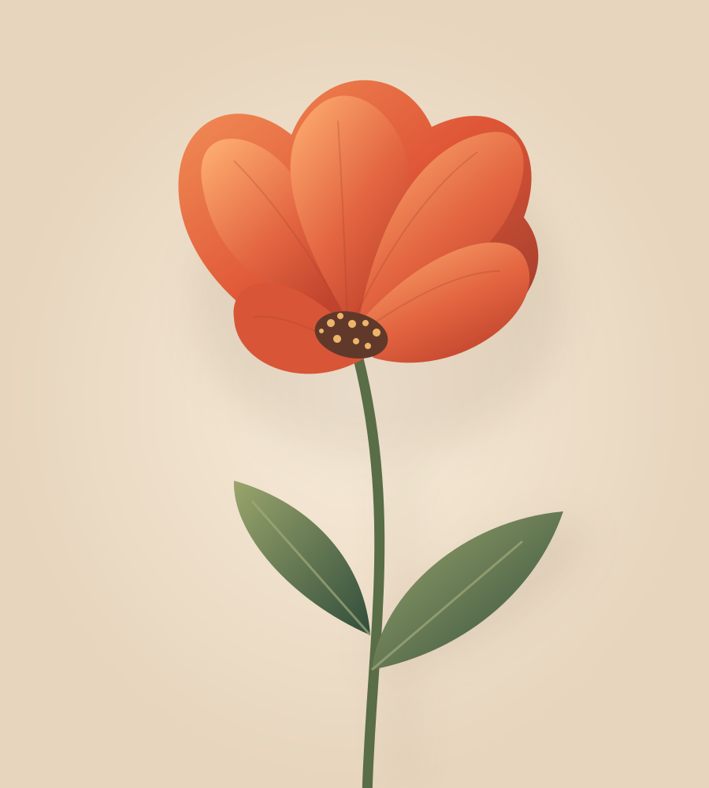

Bring a little inspiration.
A portrait. A landscape. The photo you almost deleted. Drop it into the studio, or start with our sample.
Your photos, reimagined in type. Flower is a small creative studio for turning ordinary pixels into something unmistakably yours.

There’s no perfect setting. Just a starting point,
some happy accidents, and a look that’s yours.
A portrait. A landscape. The photo you almost deleted. Drop it into the studio, or start with our sample.
Try a look. Play with size and color. Paint a mask to keep a face, a friend, or your favorite detail untouched.
Export a crisp image, editable vector text, or a plain-text grid. Your next poster, cover, or experiment starts here.
Four starting points.
Endless ways to wander.
Flower transforms pixels into characters. Protected areas come from your original, never a generated interpretation.
Manual editing happens right in your browser. No accounts, tracking, or sending your images to someone else’s server.
Free to use, study, change, and share under the MIT license. Install locally for automatic subject selection, too.
Get the local edition ↗No. Open the studio and start creating in a modern browser. For automatic AI subject selection, install the local edition with Node.js and the optional Python environment.
Manual editing and export happen on your device. In the local edition, optional AI selection sends the image only to your own loopback server. The AI model downloads once; your photos do not leave your device.
PNG, JPEG, WebP, SVG, and TXT. SVG keeps the characters editable and embeds any preserved photograph pixels. PNG gives you lossless raster output. Text export contains the character grid without masks or effects.
Yes. Flower’s code is MIT-licensed by Philipp Paulik. You are responsible for the rights to the photos and other content you bring into the studio.